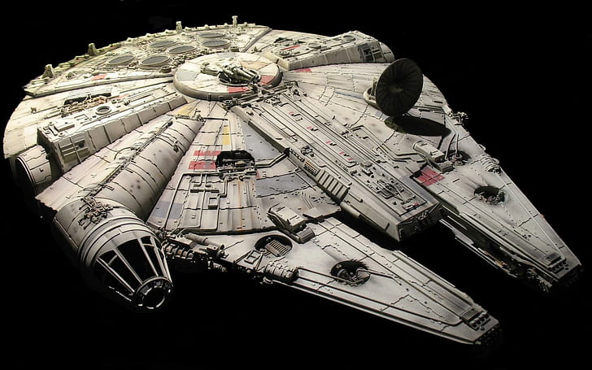

Millennium Falcon - Star Wars
"You've never heard of the Millennium Falcon?"
"Should I have?"
"It's the ship that made the Kessel Run in less than twelve parsecs. I've outrun Imperial starships. Not the local bulk cruisers, mind you, I'm talking about the big Corellian ships now. She's fast enough for you, old man."
― Han Solo and Obi-Wan Kenobi[

Facts About the Ship
- Model - Corellian YT-1300 light freighter o
- Notable Crew - Han Solo, Chewbacca, CP30
- Speed - Capable of light speed into hyperspace travel
- Engine - Hyperdrive engine that allows it to outrun Imperial Star Destroyers
- Weapons - Laser batteries, EMP, spacecraft and ground vehicles
- Defense - Advanced shielding and sensor proof smuggling compartments
Return to Home